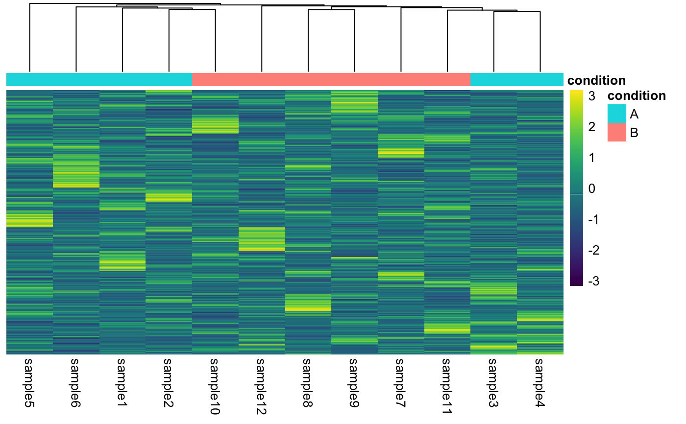

Construct a simple heatmap. By default, row- and column-wise hierarchical
clustering is performed using the Ward method, but this behavior can be
overrided by setting clusterRows or clusterCols to FALSE.
plotHeatmap(object, ...) # S4 method for dgCMatrix plotHeatmap(object, scale = "row", annotationCol = NULL, clusterCols = TRUE, clusterRows = TRUE, color = viridis, legendColor = viridis, borderColor = NULL, title = NULL, ...) # S4 method for dgTMatrix plotHeatmap(object, scale = "row", annotationCol = NULL, clusterCols = TRUE, clusterRows = TRUE, color = viridis, legendColor = viridis, borderColor = NULL, title = NULL, ...) # S4 method for matrix plotHeatmap(object, scale = "row", annotationCol = NULL, clusterCols = TRUE, clusterRows = TRUE, color = viridis, legendColor = viridis, borderColor = NULL, title = NULL, ...) # S4 method for SummarizedExperiment plotHeatmap(object, ...)
Arguments
| object | Object. |
|---|---|
| ... | Passthrough arguments to |
| scale | Character indicating if the values should be centered and scaled in either the row direction or the column direction, or none. Corresponding values are "row", "column" and "none". |
| annotationCol | Optional. |
| clusterCols | Logical determining if columns should be arranged with
hierarchical clustering. Alternatively, can define an |
| clusterRows | Logical determining if rows should be arranged with
hierarchical clustering. Alternatively, can define an |
| color | Colors to use for plot. Defaults to the |
| legendColor | Colors to use for legend labels. Defaults to the
|
| borderColor | Border color. |
| title | Optional. Plot title. |
Value
Show heatmap and return list, containing gtable.
See also
Other Plot Functions: plotCorrelationHeatmap,
plotQuantileHeatmap
Examples
# SummarizedExperiment ==== plotHeatmap(rse_small)# matrix ==== mat <- assay(rse_small) plotHeatmap(mat)